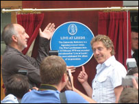

Practical

Figure 1: Roger Daltrey and Pete Townsend unveil
a Blue Plaque commemorating the recording of
'The Who - Live At Leeds' at Leeds University Refectory
[ Source: The BBC - http://tinyurl.com/2fnbqu ]This weeks practical involves taking a data file and generating a set of
markers from the data.You will apply the techniques that you have learnt in
this weeks lecture, and should also include explanatory text in the web page
describing the data set. The data are a list of the locations of Blue Plaques
in and around Leeds.
Blue Plaques
Blue Plaques are signs erected in public places, that commemorate historic
events associated with that location, and the lives of historic people who have
had an association with the location - typically they have lived in the
building to which the plaque is attached. The earliest and most widely
established scheme is run in London, and is now administered by English
Heritage; separately administered schemes are run in many other parts of the
country. Like many cities, Leeds has a Blue Plaque scheme, with over 100
plaques designated.
The data
A book by John Stillwell and Rachael Unsworth (Around Leeds, A Guide to the City Centre, Leeds University Press, Leeds, 2008)
discusses the development of Leeds as a city, including rapid recent growth.
As part of the preparatory work for the volume, data were collected on Blue
Plaques in and around Leeds. This data file is available here:
The data are contained within an Excel spreadsheet, and thus represents a
typical situation that someone developing a bespoke application for an intranet
or public-facing web site might face. The spreadsheet contains all the data
that are required, but poses some problems: the format is nothing like the
format you may wish to use, and the data are also incomplete (not all fields
are completed for all records).
The data set contains the following fields:
- Title - the main title on the
plaque
- Location - street address
- Unveiler - who unveiled the
plaque
- Date - the date of the
unveiling
- Sponsor - who sponsored the
plaque
- Easting - OS grid reference
- Northing - OS grid reference
- What it Says - inscription on the
plaque
Task
The overall task for the practical is to create a Google Map that contains
markers for the Blue Plaque locations. You should use the methods discussed in
this week's lecture, but can extend the exercise to include additional
components if you wish.
This particular practical does not form part of the
assessed work, however it will help you build up to your assessed work on
Google Maps.
The next few pages set out some (hopefully) useful guidelines for you.
[Next: Processing the data ]
[Course Index | Unit Overview]